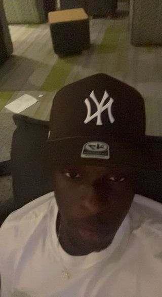

Bio of Author
Who am I? I am Ekenedirichukwu Somkene Umobi. Everyone knows me as Kenny, as that is my nickname. I am proudly Nigerian from the Igbo ethnic group. Being a computer science major is the best decision I have ever made, I can feel my eagerness and creativity flow through my blood when I try to tackle a task or solve a problem. Inspiration from the unique user interface used by giant companies like spotify and Apple, has made me go out of my way to pursue Media and Information as my minor. My talent can not go to waste and companies can not go without talent like mine.

The following are my hobbies
- Music
- Dancing
- SkateBoarding
- European Football
- Coding